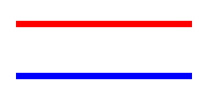
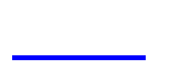
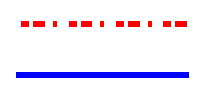
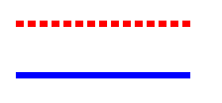

每张图上方红线为测试对象，下方蓝线检查后续实线状态。

<svg xmlns="http://www.w3.org/2000/svg" width="280" height="130"><path d="M20 30H240" stroke="red" stroke-width="8" /><path d="M20 95H240" stroke="blue" stroke-width="8"/></svg>

<svg xmlns="http://www.w3.org/2000/svg" width="280" height="130"><path d="M20 30H240" stroke="red" stroke-width="8" stroke-dasharray="0 0"/><path d="M20 95H240" stroke="blue" stroke-width="8"/></svg>

<svg xmlns="http://www.w3.org/2000/svg" width="280" height="130"><path d="M20 30H240" stroke="red" stroke-width="8" stroke-dasharray="5 -2"/><path d="M20 95H240" stroke="blue" stroke-width="8"/></svg>


<svg xmlns="http://www.w3.org/2000/svg" width="280" height="130"><path d="M20 30H240" stroke="red" stroke-width="8" stroke-dasharray="10 5 15" stroke-dashoffset="-7"/><path d="M20 95H240" stroke="blue" stroke-width="8"/></svg>
<svg xmlns="http://www.w3.org/2000/svg" width="280" height="130"><path d="M20 30H240" stroke="red" stroke-width="8" stroke-dasharray="10 5 15 10 5 15" stroke-dashoffset="-7"/><path d="M20 95H240" stroke="blue" stroke-width="8"/></svg>


<svg xmlns="http://www.w3.org/2000/svg" width="280" height="130"><path d="M20 30H240" stroke="red" stroke-width="8" stroke-dasharray="1e1 5e0"/><path d="M20 95H240" stroke="blue" stroke-width="8"/></svg>
<svg xmlns="http://www.w3.org/2000/svg" width="280" height="130"><path d="M20 30H240" stroke="red" stroke-width="8" stroke-dasharray="10 5"/><path d="M20 95H240" stroke="blue" stroke-width="8"/></svg>
{
"source": "/Users/lichao/Desktop/xpert/user-feedback/runs/rerun15-20261118/rerun15-20261118-11718-dash-stroke/local-frozen-source/cairosvg/__init__.py",
"tests": 7,
"passed": 6,
"failed": 1,
"checks": [
{
"name": "all-zero-keeps-solid-stroke",
"passed": false,
"changed_pixels": 1760
},
{
"name": "negative-array-falls-back-without-context-error",
"passed": true,
"changed_pixels": 0
},
{
"name": "odd-list-matches-explicit-double",
"passed": true,
"changed_pixels": 0
},
{
"name": "scientific-notation-equals-decimal",
"passed": true,
"changed_pixels": 0
},
{
"name": "all-zero-blue-sibling-solid",
"passed": true
},
{
"name": "negative-array-blue-sibling-solid",
"passed": true
},
{
"name": "odd-offset-blue-sibling-solid",
"passed": true
}
]
}